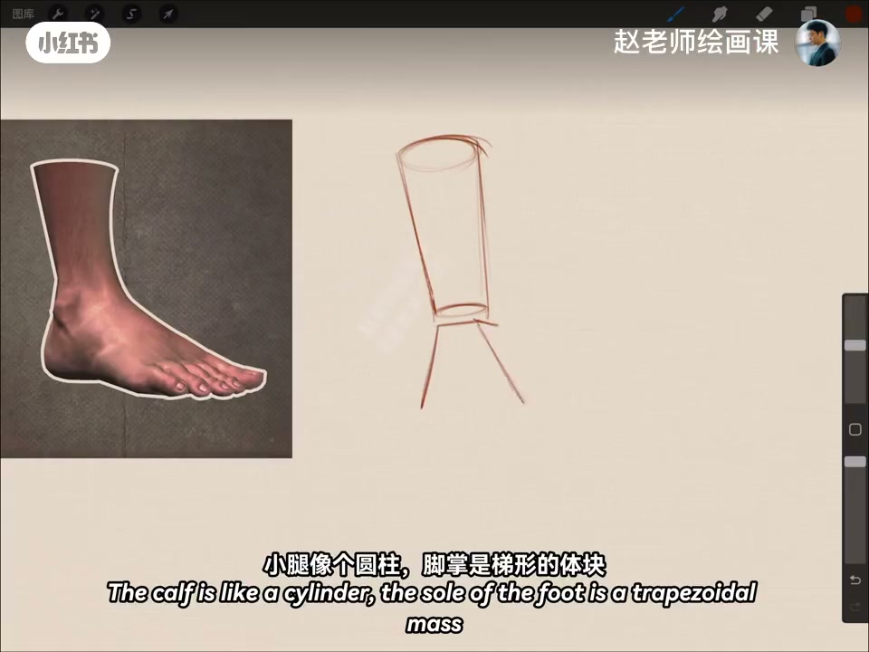
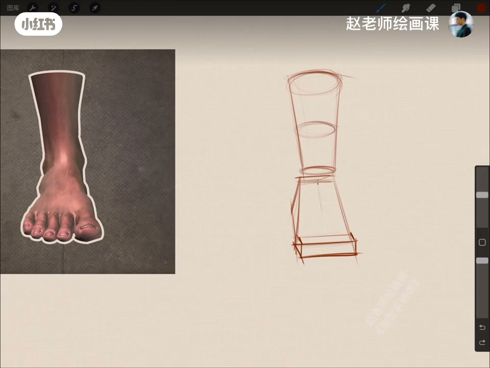
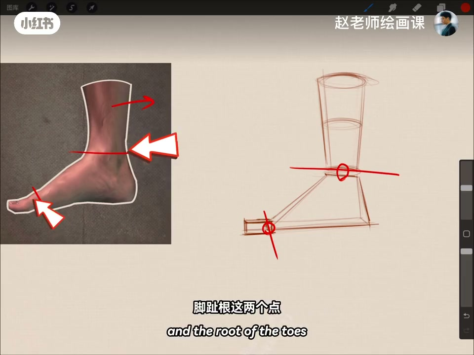
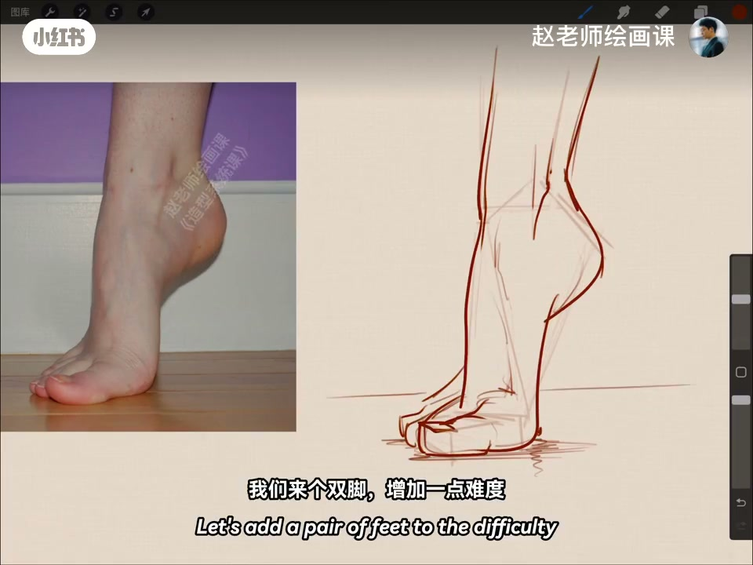

内容要点
不同姿态的脚难以下笔？侧面：小腿像圆柱，脚掌是梯形体块，脚趾是扁一点的方块；正面体块随透视变形，四分之三侧面立体感最强。别忘了脚关节可活动——把脚踝与脚趾根看成两个轴，用体块运动就能拿捏脚的动态。有了体块再细化完全不一样；双脚甚至难度 MAX 也能轻松完成。这就是伟大的几何体。
知识结构
圆柱＋梯形＋扁方块；透视变形。
脚踝／趾根当轴，体块运动＝动态。
双脚与难度MAX仍轻松。
脚不是平面剪影：先拆圆柱／梯形／方块，再把踝与趾根当轴转动——动态从体块来，不从死记姿势来。
00:00-00:39多角度脚体块
不同姿态的脚真让人难以下笔，但还有伟大的几何体块。侧面：小腿像个圆柱，脚掌是梯形的体块，脚趾是扁一点的方块。
转到正面，体块根据透视发生变化；四分之三侧面立体感最强；再回到另外一侧。00:12／00:25 把公式钉在画面上。


00:39-01:10脚踝与趾根＝两轴
差点忘了：脚的关节是可以活动的。把脚踝、脚趾根这两个点看成两个轴，用体块的运动就可以轻松拿捏脚的动态——比如这样、还有这样。
有了体块的理解，再细化起来是不是感觉完全不一样。00:44 两轴标注是证据。

01:10-01:39双脚加压与收束
来个双脚增加一点难度，居然变得很轻松；再来难度 MAX，没有费吹灰之力——这就是伟大的几何体。
想快速掌握造型技巧、打好坚实基础，造型系课程见。01:10 双脚体块练习。

完整转录（34段）
以下文本由 Whisper medium 模型自动转录，可能存在少量识别误差，已尽可能修正。
不同姿态的脚真是让人难以下痞
别担心
我们还有伟大的几何体块
在侧面角度下
小腿像个圆柱
脚掌是梯形的体块
脚趾是扁一点的方块
角度来到正面
体块根据透视发生了变化
四分之三侧面角度下
立体感是最强的
最后回到另外一侧
不过好像还少了点什么
对 差点忘了
脚的关节是可以活动的
我们可以把脚踝
脚趾根这两个点
看成两个轴程
用体块的运动
就可以轻松拿捏脚的动态
比如这样的
还有这样的
有了体块的理解
再细化起来
是不是感觉完全不一样
我们来个双脚增加一点难度
居然变得很轻松
那来个难度MAX
没有废炊灰之力
这就是伟大的集合体
如果你想快速掌握造型技巧
打好坚实的绘画基础
我们造型系的快手见
拜拜